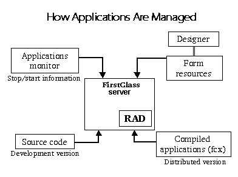

|  
Uses for FirstClass RAD applications
About FirstClass Rapid Application Developer 2.5
FirstClass® Rapid Application Developer (FirstClass RAD or RAD) is a full-featured rapid application development tool for building intranet applications and powerful database interfaces, letting you enhance client functionality. FirstClass RAD resides on your FirstClass server, so it is part of a single, comprehensive integrated system based on the FirstClass core architecture. This makes FirstClass RAD both simple and powerful and allows you to create a variety of applications, which can be distributed to a large user base without having to install them on client machines.
FirstClass RAD extends the functionality of the FirstClass server by means of applications resident on the server machine. These applications can be accessed and developed using the FirstClass client. This method gives the application access to the power, resources, and databases available on the core server without requiring their installation or configuration on client machines.
Developing a RAD application once makes it available on all supported FirstClass platforms. This is due to the cross-platform nature of the FirstClass client. Further, since you have access to the FirstClass environment, you can also tie into a database in order to create users on FirstClass, change permission,s or access levels inside the FirstClass system. Although you must install FirstClass RAD on Windows NT or Windows® XP, you can create and run RAD applications on other Windows clients as well as Mac OS X and Linux clients.
Let's take a look at a diagram of how different components are managed in FirstClass RAD:

To create FirstClass RAD applications
• create the required forms using FirstClass Designer
• use FirstClass RAD to program the event procedures for the objects on the forms.
Event procedures run when an event occurs (for example, users click a button or fill in a field on a form).
Top
What you need to know before starting
You should have a firm understanding of FirstClass
This book should not be considered a programming manual. For information on programming, we recommend you read additional materials.
Top
Uses for FirstClass RAD applications
There are many ways you can use FirstClass RAD applications to enhance the functionality of your FirstClass client. Some examples include
• letting users see their disk usage
• linking to customer, contact, and, sales databases
• integrating user information with external databases
• extracting database information and incorporating it into automatically generated messages
• importing and exporting FirstClass information to other applications
• providing fast change password ability
• gathering and processing system or web statistics on the fly
• automating repetitive tasks
• creating and parsing batch administration scripts
• starting and stopping FirstClass Internet Services remotely.
Top | |


{kind=link}